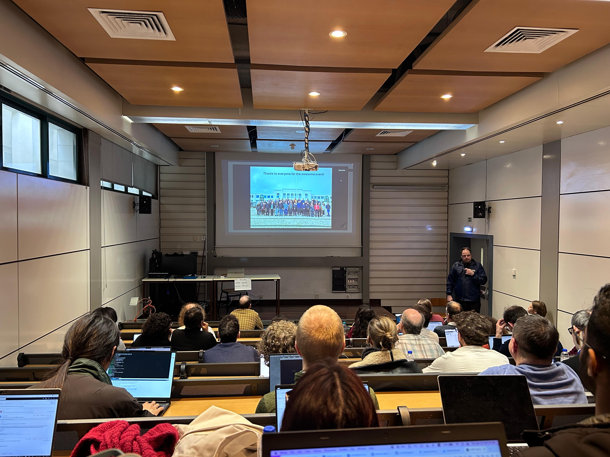
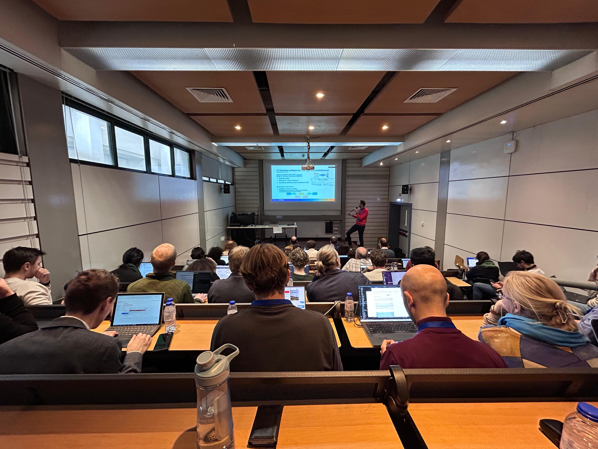
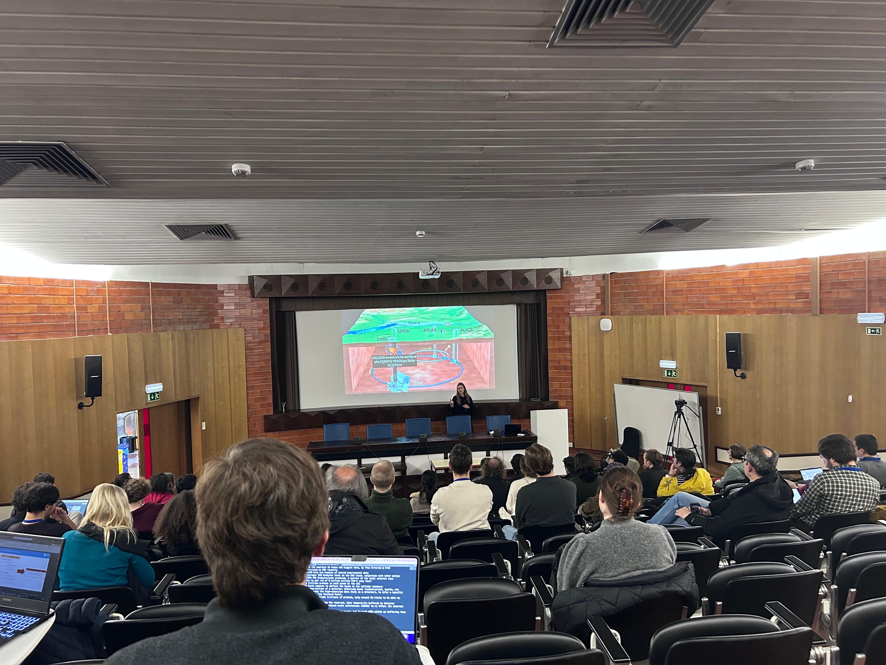
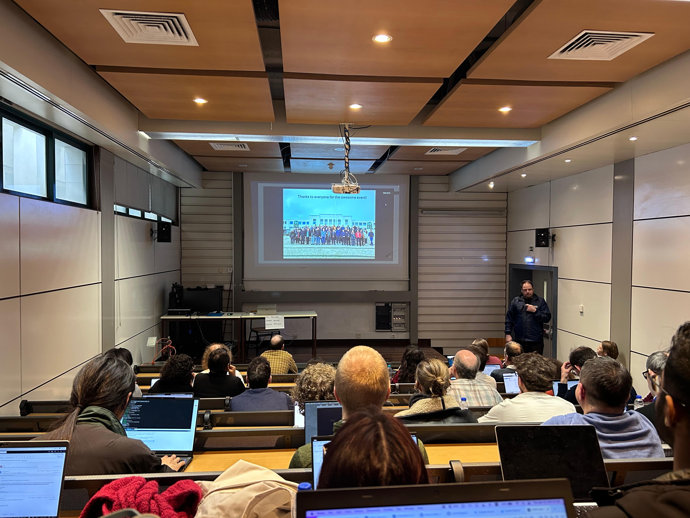
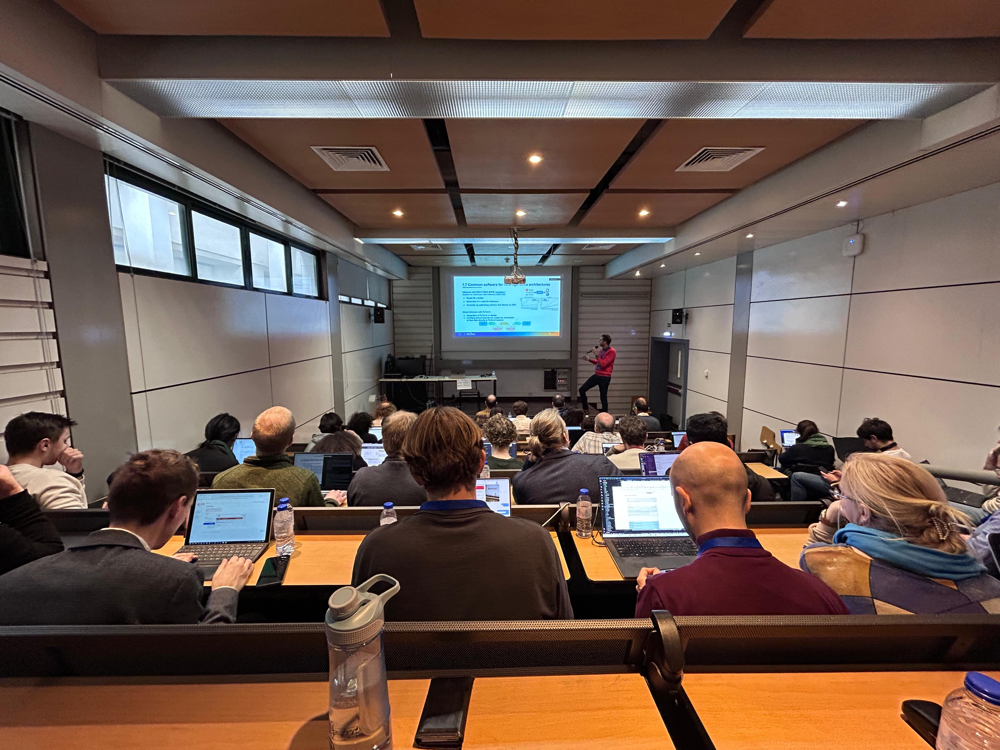
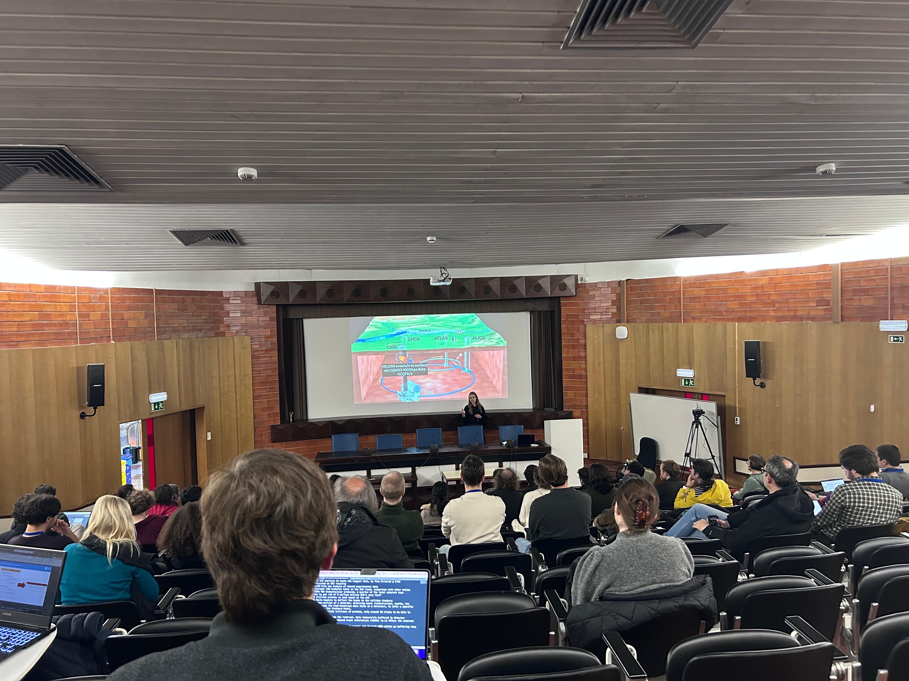

Ali Çelik
Associate Professor, Department of Physics
Mehmet Akif Ersoy University,
Turkey
About
I am an Associate Professor in the Physics Department at Mehmet Akif Ersoy University in Burdur, Turkey. My research focuses on the intersection of high energy physics and machine learning, with particular emphasis on searches for physics beyond the Standard Model.
I received my Ph.D. in Experimental High Energy Physics from Texas A&M University in 2018, where I worked on supersymmetry searches and detector development for the CMS experiment at CERN. During my doctoral studies, I was awarded a Fermilab Graduate Scholarship (2016-2017).
Currently, my work combines traditional particle physics with cutting-edge machine learning techniques, including deep neural networks, graph neural networks, and transformer architectures for BSM physics discovery.
Research Interests
Selected Publications
-
TabNet for Jet Flavor Tagging: A Machine Learning Approach
Bilecik Şeyh Edebali Universitesi Fen Bilimleri Dergisi, 12(2), 589-599 (2025) -
Beyond the background: deep learning models for BSM signal discovery
Journal of the Korean Physical Society (2025) -
Transforming Tabular Data into Graphs for GNN-Driven Classification of BSM and Standard
Model Events in High-Energy Collisions
Nuclear Physics B, 1018, 117064 (2025) -
Deep Learning Approaches for BSM Physics: Evaluating DNN and GNN Performance in Particle
Collision Event Classification
Acta Physica Polonica B, 55, A2-1 (2024) -
Exploring hidden signal: Fine-tuning ResNet-50 for dark matter detection
Computer Physics Communications, 109348 (2024) -
A fast and time-efficient machine learning approach to dark matter searches in compressed
mass scenario
The European Physical Journal C, 83(12), 1150 (2023) -
Search for supersymmetry with a compressed mass spectrum in the vector boson fusion
topology
JHEP 08 (2019) 150 -
Search for supersymmetry in the vector-boson fusion topology in proton-proton collisions at
√s = 8 TeV
JHEP 11 (2015) 189
Current Projects
COST Project CA24153: Edge Deep Learning for Particle Physics (EPIGRAPHY)
COST Project CA22130: Comprehensive Multiboson Experiment-Theory Action
COST Project CA21106: COSMIC WISPers in the Dark Universe: Theory, astrophysics and experiments
COST Project CA17137: G2Net - A network for Gravitational Waves, Geophysics and Machine Learning
News
EPIGRAPHY Kickoff School & Workshop — Lisbon
January 12-15, 2026
I participated in the EPIGRAPHY (Edge Deep Learning for Particle Physics) COST Action kickoff meeting at Instituto Superior Técnico in Lisbon, Portugal. The workshop brought together researchers from across Europe to discuss the implementation of edge deep learning techniques in particle physics experiments. Future collaboration plans and working group activities were outlined during the productive sessions.
 





4th G2Net Training School — Thessaloniki
March 28-31, 2023
I participated in the 4th Training School on Gravitational Waves, Geophysics and Machine Learning held in Thessaloniki, Greece. Organized by the G2Net COST action, this school provided comprehensive training on the application of machine learning techniques in Gravitational Wave Astronomy and Geophysics.

Machine Learning in Gravitational Wave Search — EGO, Pisa
September 28-30, 2022
I attended the workshop on Machine Learning in Gravitational Wave search: g2net next challenges at the European Gravitational Observatory (EGO) in Cascina, Pisa, Italy. This event focused on the systematic application of Machine Learning and AI to Gravitational Wave detection and Geophysics, exploring future challenges and opportunities in the field.